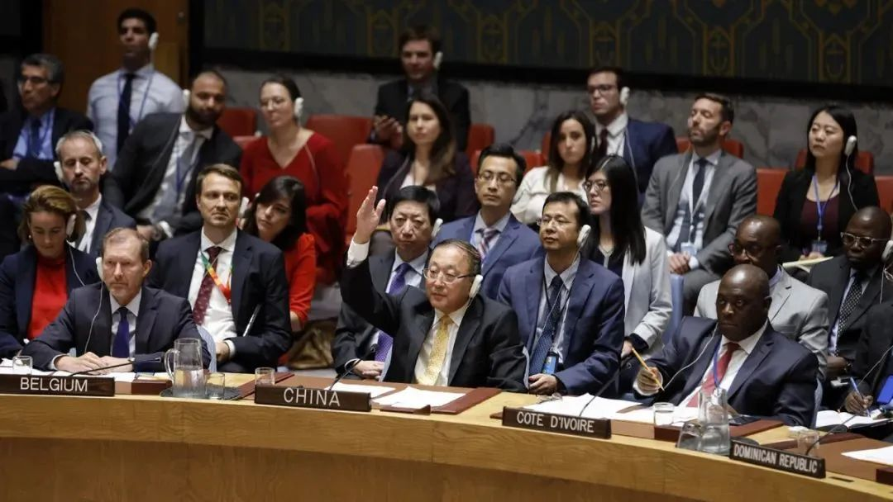

收录于合集

作品简介 ****
来源： 《中国式不干预主义：治、治理性与全球治理》，《社会科学》，2017年第3期。
作者： 石之瑜，台湾大学政治学系教授；皮查蒙·约范童，澳大利亚新南威尔士大学国际关系与发展系教授。
翻译： 王骁，同济大学政治与国际关系学院2016级博士研究生。
导读
中国参与国际事务的一个鲜明原则是坚持不干涉主义。例如，针对已然“国际化”的叙利亚内战，中国长期坚持政治解决的立场，反对外部人道主义干预或军事强制，并为此前后8次否决联合国关于叙利亚问题的提案。面对诸如阿富汗、伊拉克、叙利亚等失败国家或濒临失败国家，自由主义的全球治理哲学在“善治”的旗号下，用干预主义来拯救失败国家。这种外部强加的规范的不断失败反过来又加强了自由主义治理哲学的危机。
然而，中国坚持的不干预主义在何种意义上构成另一种全球治理的哲学？根据本文，这种不干预主义深深植根于中国对历史治乱兴衰的非线性理解。根据这种理解，“治”的概念没有呈现任何理想的“最终状态”或承诺永久解决棘手的全球性问题。中国的“治”与自由主义治理性都强调地方自主性和人的能动性在解决实际问题中的重要价值，但“治”更侧重于领导能力的修复，而非外部规则的强加。 对于中国来说，秩序是以各国为中心向国际领域辐射的，所以维持各国内部有序稳定是形成全球秩序的前提。 中国关于构建“和谐世界”与“和谐社会”、“命运共同体”和“中国梦”的话语表述，重点在于“管好自己的事情”，其对全球治理的贡献在于确立治理的榜样而非推广治理的规范。
中国决定是否赞成干预行动，更多是从“治”出发考虑，这种考虑强调维持目标国原有秩序，加强其“自我治理”能力，而非强加新秩序。 中国“治”的思想提供了国家间治理的新思路，超越了当前盛行的、源自自由主义治理性的全球治理实践和话语体系。 欧亚系统科学研究会 特编发此文，供读者思考。文章原刊于《社会科学》，仅代表作者本人观点。

中国常驻联合国代表于2019年9月19日在纽约联合国总部否决联合国安理会关于叙利亚的决议草案。图源：新华社
01
从对“治”的传统信仰说起
自1971年10月正式恢复联合国席位以来，中国与现存全球治理体系的关系一直不甚和谐，不时被描述为规则破坏者或修正国家，而非规则接受者或现状国家，经常被指责没有为全球公共产品供给做出充分的贡献——与现行国际秩序作对。然而中国依然长期宣称，为保障长治久安，一直致力于维护和平的国际环境。
尽管一些观察者会认为这类声明仅是一种外交辞令，不应轻信。 但我们在本文中做出如下假设：中国维护国内与国际秩序的固有理念源自其历史周期律，尽管这种历史观并非中国独有。 在对世界政治的现实主义理解中，国际关系被认为是“周而复始的领域”。与之相似，中国传统世界观不仅意味着中国中心思想，同样意味着在对帝国（抑或“天下”）的治理过程中，“治”与“乱”是迭代交替、相互转化的。在中国政治思想或其他类似思想中，领袖首先要思考如何匡乱反正，恢复秩序。
在中国，更迭理论能最清晰地反映出这种世界观。这在历史小说《三国演义》著名的开篇辞中，被概括为“天下大势，分久必合，合久必分”。因为这种理念的存在，中国古典史学更专注于记录历代王朝的兴衰更迭，并将之归结为帝王顺应上天旨意（天命）的得与失。领袖的品质尤为重要：德不配位的统治者会迅速失去广泛合法性（民心），并无可避免地衰亡。
这种思想内涵对中国国际参与产生了长期而广泛的影响。虽然传统中国哲学与中国当代政策的关联程度还有待讨论，但这种周期思想为理解当代中国国内和国际治理理念提供了一种独特的中国视角——即使这种视角常被认为与现有全球治理话语体系和实践格格不入。“治”的理念不仅根植于中国政治思想，也根植于当代中国的外交活动。
本文旨在分析中国如何在国际事务中运用“治”的视角来采取不干预主义措施。本文审视了“治”的概念如何影响了中国在全球治理领域的参与，同时逐步成为一种可能的全球事务管理思想基础。 “治”在本文中代表可被治理的条件（例如，受控的、受规制的、受监督的）。相应地，这也与国家治理能力密切相关。结合中国的经验，我们认为“治”作为一个分析理念，能帮助我们理解中国对干预主义所持的立场。这种立场使得中国在对需要介入的他国事务中，大多采取“不干预（Hands- off）”策略或者说最简方案。 当然，自20世纪50年代中期“和平共处五项原则”颁布以来，这种情况就持续存在，尤其是在军事干预方面。
由此，我们提出三个主要观点： 首先，中国对于是否采取不干预政策，未必完全出于对主权和人道主义原则的不同理解。 事实上，中国政府对于是否在特定情况下实施干预的决定更多出自对“治”的考虑。这种考虑更注重维持（而非强加）秩序，更注重强化问题国家的“自我治理”能力。这一定程度上说明了为何中国对于具有相似的人道主义和（或）地缘政治情况的国家，有选择地实施干预。
第二，作为一种超越全球治理实践与话语体系的国际治理方式“治”的思想应予以采用。 当模糊国内与国际政治的界限，这种理念就为“全球治理”提供了一种新的前景，这种前景并非基于共时的（例如普适的）规范和价值观的创立，而是基于对多样性和差异合法性的接纳。
第三，正如其他文献所提到，“治”的理念深深根植于中国对关联安全（Relational Security）的追求，源自治乱交替思想所表明的历史周期律。
从这个角度看，作为国际体系中新兴大国所带来的挑战，中国或印度的核心并不在于试图获得全球治理体系中的领导地位，也并不仅仅是对西方的修正或重塑新的国际规范和准则，其意义在于带来了本体论的挑战——中国对“治”的传统信仰已经成为“基本准则”，与西方信奉的基于自由主义治理性的全球治理观产生了深刻的分歧。
02
是否存在不干预主义的全球治理？
中国对不干预原则的坚持来自对全球治理的积极参与，更确切地说，是对巩固该体系的规范、准则和价值观的赞同。 全球治理和干预主义常被认为是一个硬币的两面，当前全球治理领域处理跨国事务时，经常会通过实施干预行动来维护国际社会目前的规范和准则。 针对所谓失败国家的干预行动效果尤为明显，常被认为是（重新）建立秩序的必需手段。
而从当前全球化进程来看，非国家行为体也开始参与管理全球重大事务，这同时引发了国家权威的快速衰退。回顾历史，从没有个体或者小群体可以在规则普及和全球治理领域扮演如此重要的角色。全球治理领域内日渐兴起的个体化能动性，对于中国这样一个仍然采用“自上而下”治理模式的国家来说，同样是陌生的。从这个角度出发，恰好揭示了中国在全球治理领域为何迟疑于干预行动，这与福柯学派治理性理念中对个体化能动性的强调密切相关。
为了阐述中国的不干预主义，首先要注意三个基本概念：治理、治理性和“治”。参与治理意味着参与对公共事务的定义和认知过程，同时也必然参与到制定准则和加强规范来应对公共事务的过程。在国际层面，全球治理涉及到环境污染、自然灾害、核扩散、国际贸易以及恐怖主义等各种挑战。为了应对这些影响世界整体的复杂问题，一个由各种制度和治理机制组成的复杂系统建立起来。
福柯学派的治理性理念本质上意味着“对行使政权的统治实践的合理化”。国家本身在此可被理解为这种重复性实践的产物，以至于政府“必须被当作一个进程，而非一种制度来研究”。正如国家完善了后来由政治学科继承的某种知识体系，它同时也受到激增的话语体系、世界观以及“思维风格”的影响和渗透。这些因素，与政治参与者为达到特定目标的实践和政策相互影响。从这方面讲，可以将“治理”看作是对治理化状态的特质、准则与目标的理性表述。它源自自由主义的国家概念，强调了国家的实现功能，比如实现合作、社会共识和利益和谐的共同基础，这延续了自由主义对政治与社会关系的认知。
切换到国际层面，全球治理的概念近年来在国际关系学科逐渐获得更强烈的共鸣。但是这仍然是个值得商榷的概念，不仅由于治理性理念能否合法地“等比放大”到全球层面还存在疑问。即便可以，根据艾弗·纽曼和雅各布·森丁的观点，全球治理性成立的前提是“在全球层面，主权国家的意义和作用日渐由其执政合理性决定。来自自由主义执政合理性的结构性压力，迫使国家扩大与全球范围其他执政机构的交互”。 从这个角度看，现有的全球治理体系可以说是基于自由主义治理性理念的，它遵循了国际社会演进的目的论观点。这种“心态”转而支持运用普适性规则和价值观来梳理利益纠葛，解决紧急问题建立一致共识。洛克的宪政国家为这种自由主义逻辑提供了一个例证，即通过强加一个共时的宪法秩序，来统筹国内治理进程。相似地，民主和平论——本质上是民主政体之间不会开战的理念——提出了国际秩序版的洛克学说，这经常被美国（尤其在比尔·克林顿担任美国总统期间）这种国家作为其干预行动的辩护词，以建立更稳定的自由主义民主，并暗示可以借维护世界和平之名实施干预。
与上述的自由主义治理性相比，“治”的概念没有呈现任何理想的“最终状态”或承诺永久解决棘手的全球性问题。 相反，这一理念推崇追求维持秩序的最低条件，或者说，追求可被治理的条件。 因此，尽管“治”不承诺达成“善治”，但它重视培养一个政权或者一个领袖的普遍合法性，对前者来说，这是治理能力至关重要的组成部分。 因而干预行动——无论是人道主义干预或本质上的军事干预——仅仅当其目标是恢复冲突国家或者灾难国家“治”的秩序时才被允许，而不是强加新秩序。由此，任何对善治的判断都会谨慎。这是因为实现善治需要达到条件更苛刻的、更卓越的社会政治组织形式，这必然需要强加某种规范、准则和价值观。
03
“管好自己的事情”是形成全球秩序的前提
“全球治理”意味着实践和话语体系两个维度的探索。在实践中大多数全球事务需要各国政府间一定程度的协调，并且在某些情况下，非国家行为体间亦然。尽管一贯坚持主权和领土完整原则，但中国已或多或少意识到政府为实现善治，需要遵守国际社会现存的规范、准则、价值观。即便如此，对全球治理框架的认同并不等于全盘接受。中国仍然对各国政府需要承担的国际责任的性质和实质内容持有异见。正如后文将要阐述的，这种异见尤其集中于如下问题， 即当外部干预似乎可以在一个失败国家重建善治时，实施这种干预是否是他国的责任？
由此而言，虽然有迹象表明中国正在深入参与国际事务治理，但中国对与全球治理及其深层制度的结合，最多只能说依然“不完整”，仍充满焦虑与矛盾。有人将其归因于中国同时作为一个大国和发展中国家的自我身份认同矛盾，其他人则指出，地缘政治的因素使中国对所谓西方为中心的治理架构保持警惕。 然而，我们认为，中国无法完全参与全球治理，且不说情愿与否，在理智上更由于中国对治理的基础有不同理解。 自治理念恰好彰显了中国在全球事务中对最低限度干预的青睐。 一国若能确保自身社会稳定、人民安居乐业，就是对国际秩序的一种贡献，基于此，自治需要各国政府首先关注于解决国内问题。这种观点认为，秩序是以各国为中心向国际领域辐射的，所以维持各国内部有序稳定是形成全球秩序的前提。
中国政府不断运用国家话语体系来支持这种实践，比如构建“和谐世界”与“和谐社会”，也包括近期的“命运共同体”和“中国梦”的话语表述，这些理念优先考虑中国的复兴。至关重要的是，自治理念暗中贬低了强制其他国家执行特定规范和价值观的行为——这种干预行为在目标国家产生的效果被认为是不可持续的——反而还会产生模仿他国治理模式的路径依赖。 这意味着，自治理念容许对参照体系的创新，即各国可以有所取舍，去糟取精地借鉴另一国的治理方式。一国可以作为榜样（比如治理模式）来供他国仿效而非将自己的规则强加于他国。 这可能会确保规范更好地扩散和内化，因为他国会根据自身情况通过仿效来进行社会学习。
04
“治”的历史周期律与全球治理
中国哲学中“治”的历史周期律可以追溯到孟子（公元前372-公元前289年），他认为夏商周时期（公元前2070年-公元前771年）尤以治乱交替为特点。后世史家也持有相似的历史观。关于治乱关系最新的关键表述是在2012年，在中国社科院出版的《简明中国历史读本》所题序言中指出，必须“科学把握和正确运用历史规律，正确借鉴历代治乱兴衰的经验教训”。尽管如此，一些新中国早期的作家对这种历史周期律并不认同，这一时期的知识分子曾试图用现代史学代替历史周期律。
黄炎培与毛泽东在延安机场。1945年，两人在延安窑洞展开了一场著名的关于历史周期律的对话。图源：互联网。
虽然大多数有关治乱的历史叙事都会涉及历史交替循环演进的原因，其中一些显然更关注历史是如何一直保持“有序”的。对于后者的关注，中国典籍提供了两种关键解答——每一种都可作为当代全球治理视角的理论基础。第一个解答源于儒家思想并主要围绕领袖的品质。有趣的是，孔子曾建议为了拨乱反正，仁君要更多地奖赏臣民，更少地向他们索取——这表明中国古代统治者谨慎地维护与天下臣民关系的和谐。
孟子同样强调维护君民关系。根据孟子，保障秩序的唯一路径就是让臣民“自给自足”。孟子相信若民可以自给自足，则更能发挥善良人性，因而更利于“被治理”。总的来说，孟子对未来是乐观的，“五百年必有王者兴其间必有名世者”。同时他认为明君要依靠民来辨别，明君要能开启民智，赢得民心，为人民带来和平（这里理解为一种秩序）。按照这种思路，孟子认为王位交接的方法可以是变通的，可以继承，也可以选举，而民有权反抗“不公”或“无道”因此“治”的循环周期在民赋予或者剥夺权威的过程中实现了。
孟子的观点暗含经济富裕是构成“治”的条件之一，同时也是“治”的结果之一。由此，对经济富裕的考虑引发了另一个观点，即在经济周期的必然性基础上，可以解释“治”的循环周期。值得注意的是，这种对循环周期的唯物理解，被后世发展成为更激进的观点，东汉学者王充（公元27-97年）的思想就是一个例子。王充认为，治乱交替的周期并非由政策决定，而是由时间决定。由此，国家内部的秩序与其说是有效领导的结果，不如说是国运使然。按这种设想，影响“治”的周期的政治因素没有任何实际作用。 拥护共和政体的思想家梁漱溟（1893-1988年）总结关于这类历史周期的文献，并得出这样的观察结果：治世之后，乱世往往由于世袭制度滋生的腐败、人口增长导致的生产力下降和道德衰退；而乱世反过来孕育了革命，新的领袖通常力图休养生息，这最终为另一个施政周期的到来铺平道路。 如果将这种看法与洛克式宪政主义比较，那么后者倒退回混乱的非宪政国家只是时间问题。
回顾有关治乱周期的中国传统思想，很明显的是，其中并没有明确的内外界限，所以这种思想也可用于领土主权视角。因而，这种观点使得“治”的周期有可能在不同的系统实现，无论是集中的还是松散的系统。决定性因素是民众对当前执政者的看法。这里所指的民众在政治上是无差别的，而且应该保持无差别，不仅仅限定于可参与公民。
值得注意的是， “治”和治理性两个概念的确有一个共同特质，那就是两者都强调地方自主性和人的能动性在解决实际问题中的重要价值。 但是两者概念上的差异仍然导致对这种能动性作用的预期不同。首先，自由主义治理性所推崇的个体化能动性，是建立在民众已被自由主义制度框架规训的基础上。根据治理性理论，部落和宗教派别的政治强人或组织，将会寻求与自由国家结盟。所以，他们不会阻止对全球治理的自由主义规范、准则和价值观的引入和同化。相反，“治”的思想则推崇卓越的领导力，以此应对给本地民众带来影响的全球性问题。如前所述， “治”倡导以一国国内方式应对全球问题。正因如此，要求各国当局进行改造的全球规范和准则会受到来自“治”的支持者的质疑，比如中国。 此外，自由主义治理性为应对重大问题而关注于规则的实施和执行，与此不同，“治”则强调在尝试任何可行方案前，应首先识别利益相关者，然后将其结合成一个“大我”。就此而言，“治”更侧重于领导能力的修复，而非外部规则的强加。
对此，会出现这样的问题： 当代中国的政策和外交是如何体现“治”的思想呢？ 当今中国在国际交往活动中，从两方面突出了“治”的思想。
首先，如果说全球治理旨在推行自由主义价值观，用干预行动完成无政府状态到治理性的转变，一个崛起的中国则倾向于等到属于“全球治理的时刻”逝去重返无政府状态。从这个意义上说，全球治理被视为昙花一现——或者说，一个对来自全球无政府状态挑战的临时应对方案。正如西方学者哀叹于当前全球治理体系的不足和未知性，对其是否能跟进国际形势的迅速变化抱有疑虑，中国专家也建议北京不要热衷于——进而过多参与这个前途未卜也并不完善的体系。
依照中国的时空哲学，无政府状态的属性之一就是，无论干预主义者如何试图控制它，它终将卷土重来。因而对中国来说，“韬光养晦”是一种更好的选择。 在中国人心中，国际事务问题不在于推广规范和准则，而在于如何确保国家自我治理的能力。 当然，实现这种治理能力并非易事。然而，从“治”的角度看，全球治理及其隐含的对干预主义行为的支持，从长远来看，恰恰破坏了地区政府的创造性和自主性。而全球治理的支持者会问“治”的思考者，“等待时机的过程中，（人类）会经历多少痛苦？集中领导下‘治’的本质是维护谁的利益”；而“治”的思考者会更加关注于这个问题，“如果缺少民众的信任，那么本该代表全体人民的统治者能否推行外部强加的规则”。
第二，与自由主义治理性寻求运用普适的治理话语来调和差异与管理“多元文化”不同，从“治”的角度来看差异并不需要特别对待。 很多学者认为多元化是儒家政治哲学固有的，与此相反，“治”的理念既不鼓励也不排斥多元化。因此， 差异既不能被看作是国内或国际体系混乱的有效解释 ，进一步而言，不能成为实施干预来推行自由主义秩序的正当理由。 差异也不能作为政府逃避职责和义务的有效依据 ，无论国家的性质如何（即无论是封建主义、部落主义还是专制主义），维持可治理关系有赖于政府职责和义务的履行。由此，意识形态、宗教和文化差异所定义的国家身份也不应引发担忧。简而言之，差异和多样性不应被抑制，而应被允许。然而在自由多元主义看来，不幸的是，这不仅被视作是忽视了每个主权地区内存在的人权问题，同时将改革的重担留给了当地民众，而仅与民众根据当地规范和条件做出的选择有关。
05
自由主义治理性的破产
与无政府状态相对的是主权，在21世纪，主权概念被福柯的治理性进一步强调，而后者用以规训主权管辖下的人民为全球治理做准备。主权为防范无政府状态，空间上将其拆解为不同的有序区域。然而相比之下，治乱思想则是时间层面的二元周期。从中国视角来看，与混乱相对的不是确立完全共时的治理规则，而是如上所述，恢复尊重多样性和差异的可治理状态。这种立场貌似现实主义，实则不然，因为在对秩序的讨论中，权力平衡的关切显得不切实际。所以，只要可以维持秩序，就无需讨论国家应如何治理。这种态度反映在中国对“互相尊重关系”的外交承诺，以及对“尊重发展模式多样性”的重申，也反映在其确实倾向于支持缅甸、津巴布韦和朝鲜的威权政体。
综合而言，全球治理和治理性塑造了一个全球空间，在此空间中，全球性和地区性作为两个变量通过干预主义相互作用。由此看来，对于失败国家的干预，作为其中一方面可视作地区性主张存在局限的标志，是对未能遵循现行治理性理论和实践的民众的规训。从这个意义上，干预既是一个话语，也是一个追求普适规则的进程，以此来达到善治。它指导如何对全球和地区空间进行重新划分，而并没有超越空间局限。
正如本文开头所述， 全球空间的共时性与理想国家存在普适标准是善治概念的信念支撑，中国的崛起给善治这个未定概念提出了根本性的认识论挑战。 鉴于中国政治思想长期以历史周期律为特征，向以自由主义治理性为前提的理想国家迈进的进程并不能提供给中国多少借鉴。事实上，“善治”这个概念正备受质疑的现状，似乎证实了它的不足。根据周期思想，似乎最多只能寄希望于（暂时）维持或恢复任一既有社会秩序。当然，“巩固化民主”的建立作为善治的（失败的）美式注解似乎证实了其不足。在推行这种美式治理模式时，悬而未决的问题比比皆是，伊拉克和阿富汗的案例就是明证。这促使至少一位著名评论家认为，巩固化民主并不可行。他认为美国决策者不如寻求一个退而求其次的替代方案，即“足够好的治理”。
中国基于“治”的思维路径，进一步而言，还引发了一种本体论的挑战，因为它将可治理的民众置于一个长期的历史周期中，在其中，任何空间导向的思维将显得并非本体。在儒家史学中记载了一个重要方面，学者为了寻找并辅佐仁君而游历。孔子本人以不断云游四方而闻名，学者不需忠于所居之地，甚至民众也是如此。被君王领导的历史最早可以追溯到大舜的时代（约公元前21世纪）。传说舜到历山地区之后，“一年而所居成聚，二年成邑，三年成都”。这个传说成为后世王道统治灵感的源泉。其寓意在于美德是治理百姓及新兴城市的关键要素。因为疆土的意义来源于一方百姓选择追随高尚的领袖。
这反过来又对干预的合理性提出质疑，干预通常包含对目标地区民众的改造，以达到治理性的永恒状态。总而言之，“治”的思想本质上体现了超越共时性治理与地区差异之间矛盾的一种历史观。鉴于中国对线性史学的疏离，“治”的思想着重从实现的具体方法和进程层面，反驳了温特的世界社会理论。如前所述，三国里广为流传的名言——虽未经科学检验，周期划分也不甚精确——不仅体现了对大一统的内在偏好，也体现其对“实用主义”的倍加推崇。这本质上意味着，除非出自整体领导阶层内部，否则所有问题的解决方案都不可行。同时，整个阶层需要得到所有受众（如治下百姓）的支持只有这样才能维持秩序。相反外部强加的规范和准则有可能煽动地方割据，精英层分裂，在极端情况下，还可能引发斗争，而因此导致最终的失败。
即便如此， 对于失败或衰落国家的情况，不仅体现了失败或无效的治理，而且同时表明自由主义治理性的破产。 这些国家以侵犯人权和法治薄弱为特点，也存在其它问题，是全球治理的严重威胁。这种情况下，这些国家的民众将无法经历全球治理所需的“文化准备”。接纳干预主义这种由自由主义治理性所推行的话语体系，仍有赖于这些文化准备，这些准备使得干预变得可行，不可或缺，甚至令人满意。当这些文化准备由政府实施，并由立法者颁布时，就会极具影响力。这种情况在自由主义民主社会中时有发生，干预主义的合理性以及这些事务的全球性对自由主义民主社会中的成员来说几乎是“理所当然的”。因此，即使不知道对失败国家的何种问题进行干预，公众也将倾向于支持干预行动。尽管外交政策正逐渐为人所熟知，但大多数国家公众仍然对外交决策过程知之甚少。
相比之下，失败国家则缺乏这类文化准备。这意味着，“全球治理”往往受到质疑，结果是民众不会承认干预的合法性（这需要通过治理性的日常实践培养）。事实上，美国对伊拉克的军事干预早已受到民众强烈反对以至于越来越多的伊拉克人通过祭奠萨达姆墓表达敬意，这象征民众正日益怀念强大领袖。 即便如此，虽然一些观察家认为自由主义治理性不适用于某些（非西方）失败国家，然而讽刺的是，这些批评家仍指出干预必然是唯一的解决方案。 这一定程度上涉及“保护责任”和“作为责任的主权”等原则。出于对失败国家无法发挥治理所需的最低限度职能的担忧，这两个概念近年在学界和政界引起的反响日益增加。
对中国这个旁观者而言，干预的实质使其表面的“天然合理性”变得可疑，因为其实质表现为试图对目标国家施加影响的“外来”力量。 这一定程度上解释了中国政府为何总是拒绝参与干预行动，即使是出于人道主义目的干预。近期在利比亚，连同以往20世纪90年代的科索沃和60年代中期的刚果案例，都证明了这一点。进一步说，对干预的排斥也伴随着所谓的新左派运动，它尝试借助对现存全球治理体系合理性的论战，来抨击现有治理性理论，最终揭示该理论不过是牺牲他国为其拥趸谋利的控制机制。
即使如此，对于诸如发生在达尔富尔地区的长期冲突，是否干预仍然是中国所面临的两难选择。尽管国际社会大多数成员试图以人道主义关切为由干预苏丹，但中国坚决反对干预，而支持对话机制，至多是施加外交压力。虽然出于日益加重的社会压力，中国最终不得不以赞成部署非盟- 联合国达尔富尔特派团（达尔富尔混合行动）妥协，但至少中国获得了非盟的支持，并得到了当地势力的赞许。在对利比亚卡扎菲政权进行人道主义干预的问题上也有类似情况。虽然中国（与其他四国，包括俄罗斯）选择对联合国安理会第1973号决议投弃权票，不赞成在利比亚设“禁飞区”，但中国最终支持了联合国拟议的部分制裁措施。
达尔富尔混合行动维和人员在北达尔富尔社区。图源：联合国。
然而中国在这些情况下对干预行动的应允，仍是特例而非惯例从“治”的思维的角度理解，中国领导层会继续坚持：目标国家当地民众应有权按照自己想要的方式来恢复国内秩序，而不论这样的决定是否能被国际社会接受。 如前所述，虽然这种心态似乎表明中国不乐于支持自由主义民主理想，但更为重要的是，中国质疑任何从外部强加规则和政策的尝试的可行性。这一点从中国对伊拉克的立场就可以看出来，正如“三个支持”所体现的。外交部长王毅代表中国政府承诺：第一，坚定支持伊拉克维护国家的独立、主权和领土完整；第二，向该国提供援助，以加强政治重建和民族和解进程，使伊拉克人民能够“找到适合本国国情的发展道路”；第三，支持伊拉克政府反对一切形式的恐怖主义。这种外交立场强调了中国一贯的极简主义治理路径，换句话说，强调了中国承诺维护所有利益相关者之间的可控关系。就此而言，中国看起来更像是“现状维持”，而非像有些评论家认为的那样，存在“修正”，试图制定自己的规则。
06
结论
以自由主义治理性为前提的全球治理理论，在很大程度上促进了全球事务领域中的干预主义。虽然中国是全球治理的积极贡献者，但在大多数情况下，仍然坚持不干涉主义的独立外交政策。本文认为，要理解这种态度，我们必须考虑中国对“治”的深刻偏好， 即秩序应依靠“自下而上”的地方力量从内部恢复，且外部力量不应试图重建“新”的（自由主义民主的）制度或将自己的规范与价值观强加于目标国家，否则会导致更多的抵抗和不稳定。 相反，它们只应以维持秩序为目标，协助强化本土执政能力，同时让面临问题的相关国家政府自己寻求解决方案。
福柯治理性和全球治理是在同一认识论层面运行的。它们的一个重要成果就是为那些全球治理的支持者创造了道德责任的概念。另一方面，回避全球治理的国家则被贴上不关心国际正义或秩序的标签，被排挤成边缘国甚至是奴隶国。相比之下，“治”的理念是建立在历史周期律上的，与现行的自由主义治理性理论不同，并不认为干预在大多数情况下是必要的。从这个意义上说，有理由认为，“治”的支持者对当代全球治理的认识论疏离源于治理性所裹挟的自由主义色彩，而并非源于干预行为本身。 当然，中国人传统的历史周期律，与治理性和全球治理并不属于同一认识论层面。即便如此，这并不意味着中国不能学习全球治理的规则，也不意味着中国不可能逐步借鉴自由主义治理性的合理性。然而，无论从理论上还是实践上，将“治”的路径与自由主义治理相互调和仍颇具挑战性。
排版 | 贾希铭
本文章来源于“欧亚系统科学研究会”
文章观点不代表本平台观点